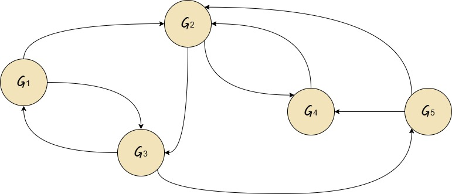
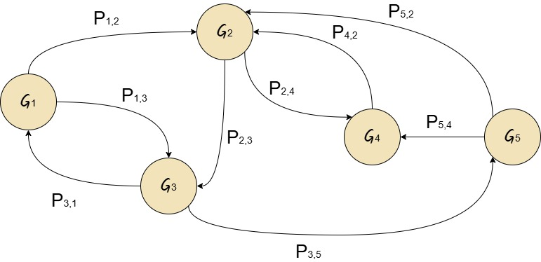
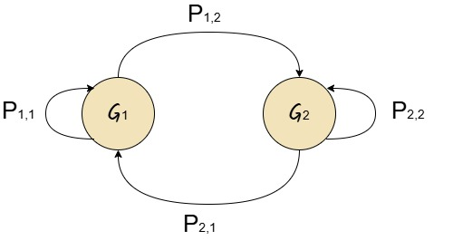
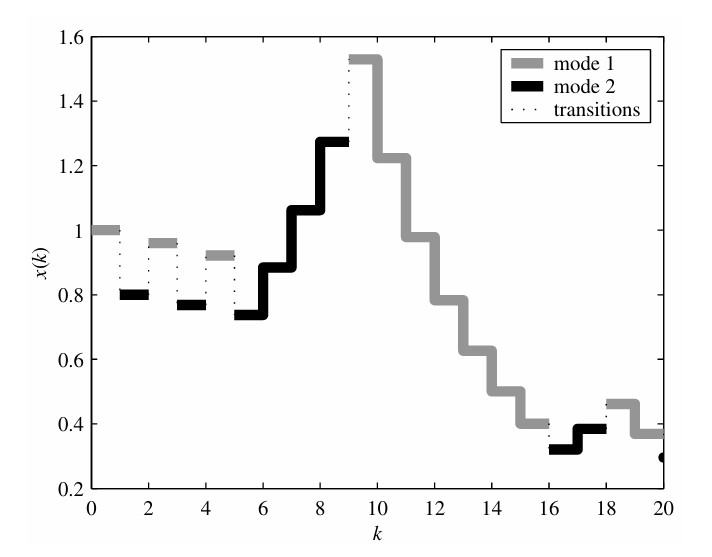
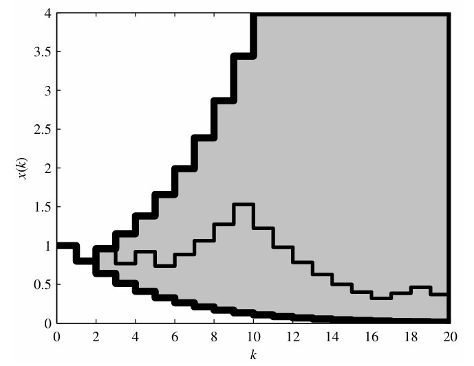

Class 1: Introduction
May 2026
The following material is necessary to comprehend this topic:
"Models are, for the most part, caricatures of reality, but if they are good, then, like good caricatures, they portray, though perhaps in a distorted manner, some of the features of the real world."
M. Kac
A stochastic process is a mathematical tool for modeling time-dependent random phenomena. While a single random variable represents a static outcome, a stochastic process \((X_t)_{t \in T}\) describes a system that evolves over a set of time indices T.
A simple unrestricted random walk \((S_n)_{n \geq 0}\) starting at \(S_0 = 0\) is defined by:
$$ S_n = X_1 + X_2 + ... + X_0 = \sum_{k=1}^{n} X_k $$
where:
A process is Markov when its statistical behavior after time \(t\) can be recovered from the value \(X_t\) of the process at time \(t\). In particular, the values \(X_s\) of the process at time \(s \in [0,t)\) have no influence whatsoever on this behavior as long as the value of \(x_t\) is known.
\[ P(S_{n+1}=j \mid S_n=i_n,\ldots,S_1=i_1) = P(S_{n+1}=j \mid S_n=i_n) \]
Suppose a dynamical system described by \(\{\mathcal{G}_1,\mathcal{G}_2,\ldots,\mathcal{G}_n\}\) that jumps from one mode to the other:

If the jumps evolve stochastically according to a Markov chain, we know the jump probability for each of the other models:

Based on this diagram it can be created the transition probability matrix:
\[ P= \begin{bmatrix} 0&p_{12}&p_{13}&0&0\\ 0&0&p_{23}&p_{24}&0\\ p_{31}&0&0&0&p_{35}\\ 0&p_{42}&0&0&0\\ 9&p_{52}&0&p_{54}&0 \end{bmatrix} \]
We can associate each of these models to an operation mode of the system \(\theta(k)\) that acts as the "pointer" that identifies which node the system is at time k.
For example, if your system is currently at note \(\mathcal{G}_3\), then \(\theta(k)=3\).
By now, we will assume that the current operation mode \(\theta(k)\) is known at each instant \(k\), unless otherwise stated.
Consider a system with two operation modes:
\[ \mathcal{G}_1:\quad x(k+1)=0.8x(k) \\\mathcal{G}_2:\quad x(k+1)=1.2x(k) \]

The transition probability matrix is given by:
\[ P= \begin{bmatrix} 0.7 & 0.3\\ 0.4 & 0.6 \end{bmatrix} \]
Consider \(\theta(k)\) for \(k = 0,1,\ldots,20\) and \(\theta(0)=1\).
In this case, the markov chain may present \(2^{20} = 1048576\) different realizations.
A randomly chosen realization of the Markov chain is given by:
\[ \theta(k) = \{1,2,1,2,1,2,2,2,2,1,1,1,1,1,1,1,2,2,1,1,2\} \]
when the initial state is \(x(0)=1\), the system trajectory is presented in the next page.

Different realizations of the Markov chain will lead to a multitude of very similar trajectories:

We could consider three approaches to control the system:
\[ \begin{aligned} x(k+1)&=A_{\theta(k)}x(k) +B_{\theta(k)}u(k) +G_{\theta(k)}w(k) \\[4mm] y(k)&=L_{\theta(k)}x(k) +H_{\theta(k)}w(k) \\[4mm] z(k)&=C_{\theta(k)}x(k) +D_{\theta(k)}u(k) \end{aligned} \]
With initial conditions \(x_0\) and \(\theta_0\).
The following material is necessary to comprehend this topic: